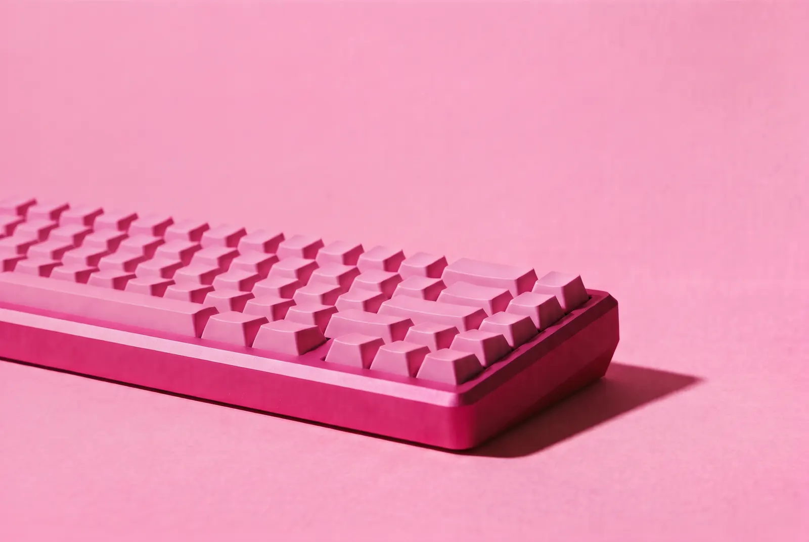
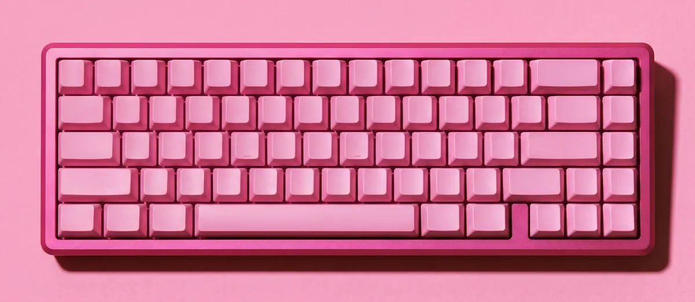
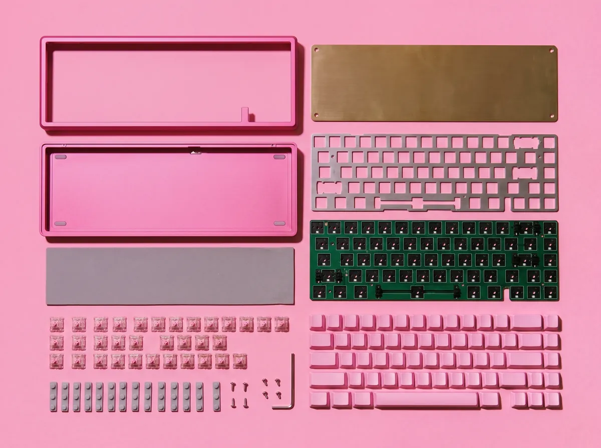
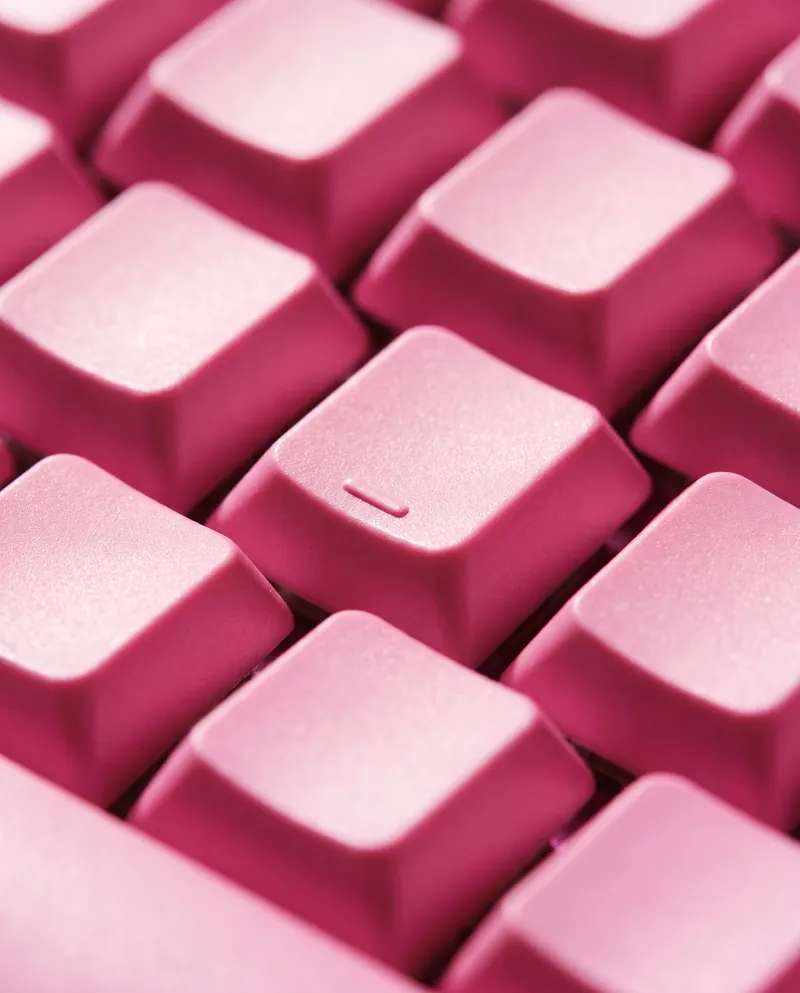
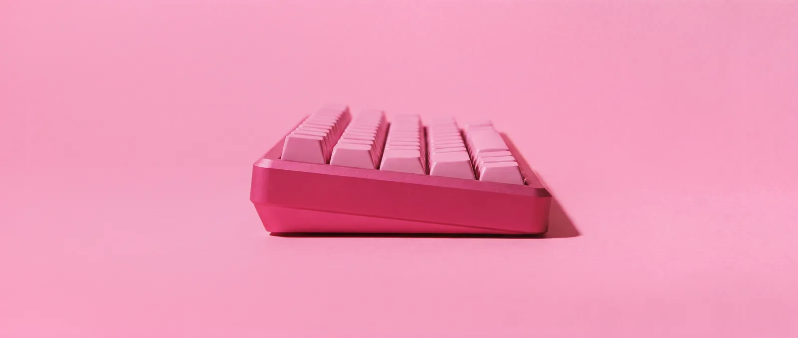
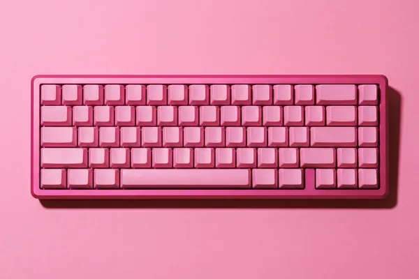
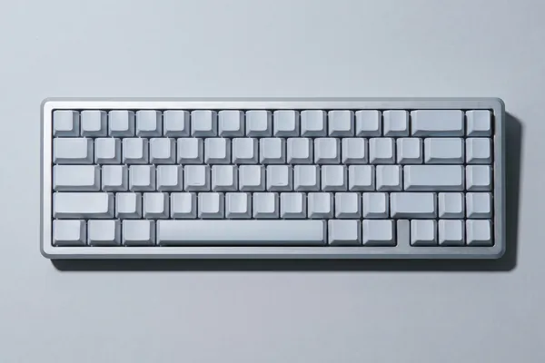
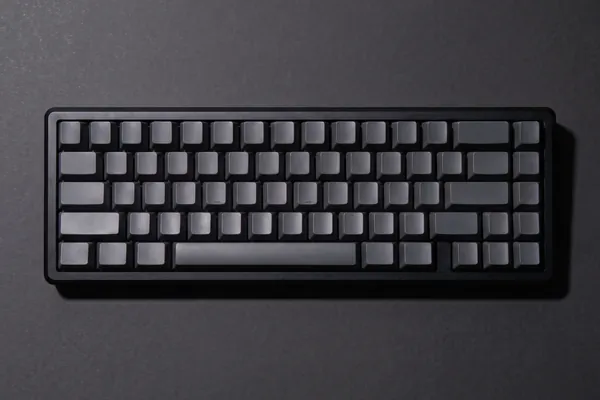
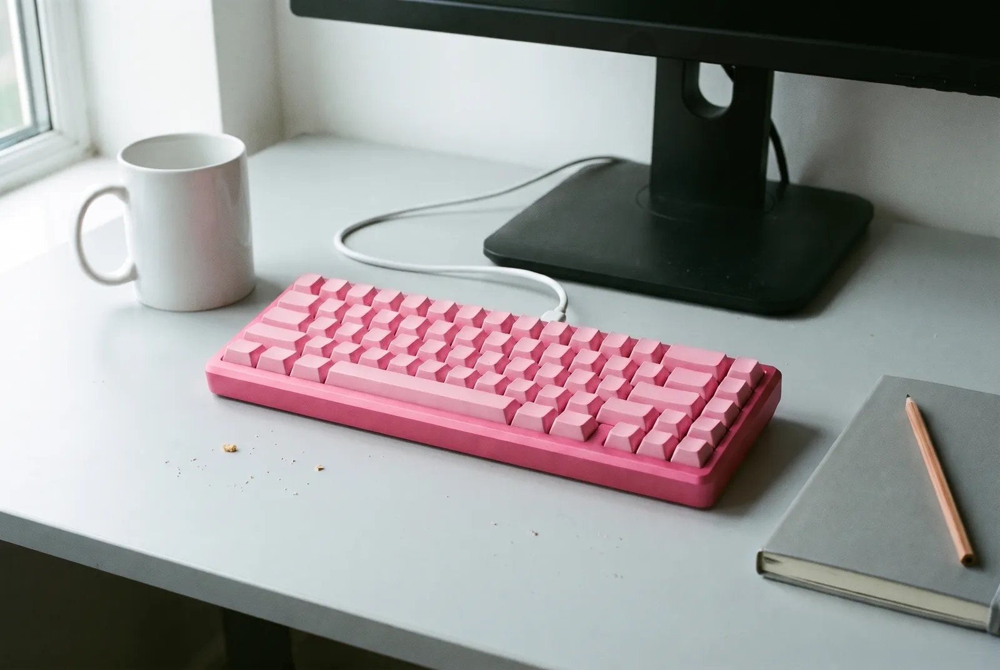

가락65

손가락이
내는 가락.
가락 65는 6063 알루미늄 덩어리를 깎아 만든 65% 기계식 키보드입니다. 키캡에는 글자를 새기지 않았고, 접는 다리 대신 케이스 바닥에 6.5°를 깎아 넣었습니다. 첫 색은 진달래. 1차 300대에만 만듭니다.

- 배열
- 68키, 65%
- 크기
- 319×112mm
- 무게
- 1.9kg
- 타건 각도
- 6.5°다리 없이
쳐 보세요
키캡을 누르거나 키보드의 가운데 줄, A부터 L까지 쳐 보세요. 글자 없는 키캡에 누르는 동안만 그 자리의 글자가 떠오르고, 고른 스위치의 소리가 납니다.
친 글자:
이 브라우저에서는 소리를 낼 수 없습니다.
가운데 줄만으로 ‘아리랑’, ‘할머니’, ‘호랑이’를 칠 수 있습니다. 소리는 키캡을 처음 누를 때 켜지고, ‘소리’ 단추로 끌 수 있습니다.
여덟 겹으로
쌓았습니다
바닥 나사 여덟 개를 풀면 이렇게 펼쳐집니다. 번호는 위에서부터 쌓이는 순서입니다.

키캡
PBT 1.5mm, 통째로 물들였습니다. 글자는 없습니다.
상판
6063 알루미늄을 깎은 테두리. 비드블라스트 뒤 아노다이징.
스위치
5핀 핫스왑. 고요, 마루, 또각 가운데 하나.
보강판과 가스켓
1.5mm 알루미늄 판을 실리콘 가스켓 14개가 띄워 둡니다.
기판
1.6mm 핫스왑 기판. QMK와 VIA로 키 배치를 바꿉니다.
흡음재
3.4mm 폴리우레탄 폼이 통울림을 줄입니다.
황동 무게추
420g. 하판 안쪽에 눕혀 무게 중심을 낮춥니다.
하판
6.5° 기울기를 깎아 넣은 바닥. 고무발 4개.

글자 없는
키캡
키캡 68개 모두 각인이 없습니다. 자리는 손가락이 기억하고, 닳아서 지워질 글자도 없습니다.
PBT를 1.5mm 두께로 사출해 통째로 물들였습니다. 표면은 고운 모래처럼 까슬해서 오래 써도 번들거리지 않습니다. 줄마다 높이와 기울기가 다른 원통형이고, F와 J에는 손끝으로 찾는 작은 돌기를 남겼습니다.
각인이 필요하면 영문과 두벌식을 새긴 같은 색 키캡 세트를 29,000원에 따로 팝니다.

다리 없이 6.5°
접는 다리를 다는 대신 케이스 바닥을 비스듬히 깎았습니다. 앞은 22mm, 뒤는 35mm. 세게 쳐도 다리가 접혀 내려앉을 일이 없습니다.
스위치는
세 가지
완성품에는 고른 스위치를 끼워 보냅니다. 핫스왑 소켓이라 나중에 상자 속 리무버로 뽑고 꽂으면 됩니다.
-
고요 리니어
걸림 없이 바닥까지 곧게 내려갑니다. 소리는 낮고 둥급니다.
- 작동 압력
- 45gf
- 작동 지점
- 2.0mm
- 바닥 압력
- 58gf
- 전체 이동
- 4.0mm
-
마루 택타일
누르자마자 작은 턱을 넘습니다. 글자가 들어간 순간을 손끝이 압니다.
- 턱 높이
- 62gf
- 작동 지점
- 2.0mm
- 바닥 압력
- 60gf
- 전체 이동
- 3.8mm
-
또각 클릭
작동하는 순간 또렷하게 딸깍합니다. 혼자 쓰는 방에 권합니다.
- 작동 압력
- 58gf
- 작동 지점
- 1.9mm
- 바닥 압력
- 65gf
- 전체 이동
- 3.6mm
누를 때놓을 때작동하는 점가로는 누른 깊이 0–4.2mm, 세로는 힘 0–100gf
세 가지 색
케이스는 아노다이징으로 물들이고, 키캡은 케이스에 맞춰 따로 염색했습니다.
-

진달래
진분홍 케이스에 연분홍 키캡. 1차 300대에만 만들고, 다시 만들지 않습니다.
-

은
투명 아노다이징으로 알루미늄 빛을 그대로 두고, 연회색 키캡을 얹었습니다.
-

먹
검정 아노다이징 케이스에 흑연색 키캡. 손때가 가장 덜 탑니다.

책상 위에서는
이만합니다
폭 319mm. 숫자 키패드가 달린 키보드보다 한 뼘 좁아서, 마우스가 어깨 가까이 옵니다. USB-C 케이블 1.5m가 함께 들어 있습니다.
사양
| 배열 | 65%, 68키 |
|---|---|
| 크기 | 319 × 112mm, 높이 앞 22mm, 뒤 35mm |
| 무게 | 완성품 약 1.9kg (황동 무게추 420g 포함) |
| 타건 각도 | 6.5° |
| 케이스 | 6063 알루미늄 CNC 가공, 비드블라스트, 아노다이징 |
| 마운트 | 가스켓 마운트, 실리콘 가스켓 14개 |
| 보강판 | 알루미늄 1.5mm |
| 기판 | 1.6mm 핫스왑(5핀), QMK와 VIA 지원 |
| 연결 | USB-C 유선, 1000Hz |
| 키캡 | PBT 1.5mm, 염색, 각인 없음 |
| 스위치 | 고요(리니어), 마루(택타일), 또각(클릭) 중 하나. 완성품만 |
| 상자 구성 | 키보드, USB-C 케이블 1.5m, 키캡 리무버, 스위치 리무버, 육각 렌치, 여분 가스켓 4개 |
1차 예약
1차 생산은 300대입니다. 예약할 때는 돈을 내지 않고, 결제는 출고 2주 전에 메일로 안내합니다.
- 11.03예약 시작
- 11.30예약 마감
- 2027.01생산
- 2027.022월 말부터 차례로 출고
예약했습니다
예약 번호GR65-1-0000
- 구성
- 색
- 스위치
- 합계
- 원, 출고 2주 전 결제
데모라서 아무 정보도 보내지 않았습니다. 이 화면은 이 브라우저에만 남습니다.
자주 묻는 것
글자 없는 키캡, 불편하지 않나요?
처음 며칠은 기호 키를 찾느라 손이 멈춥니다. 한글과 영문 자리는 대부분 이미 손이 알고 있어서, 일주일쯤 지나면 보지 않고 칩니다. 그래도 불편하면 각인 키캡 세트(29,000원)로 바꿔 끼우세요.
맥에서도 쓸 수 있나요?
네. 꽂으면 바로 됩니다. 맥 배열은 VIA에서 바꾸면 되고, 키캡에 글자가 없으니 키캡을 바꿔 끼울 필요도 없습니다.
스위치를 나중에 바꿀 수 있나요?
핫스왑 소켓이라 상자에 든 리무버로 뽑고 꽂으면 됩니다. MX 규격 3핀, 5핀 스위치가 모두 맞습니다.
무선은 안 되나요?
가락 65는 유선만 지원합니다. 배터리가 들어갈 자리에 황동 무게추를 넣었습니다.
진달래 색은 정말 다시 안 만드나요?
네. 2차부터는 은과 먹 두 가지만 만듭니다. 진달래 키캡과 케이스만 따로 팔지도 않습니다.
예약을 취소할 수 있나요?
결제 안내 메일을 받기 전까지 언제든 취소할 수 있습니다. 예약할 때 돈을 내지 않으니 돌려받을 금액도 없습니다.
고장 나면 어떻게 하나요?
받은 날부터 1년 동안 기판과 케이스 결함은 무상으로 고쳐 드립니다. 키캡과 스위치는 닳는 부품이라 빠집니다.